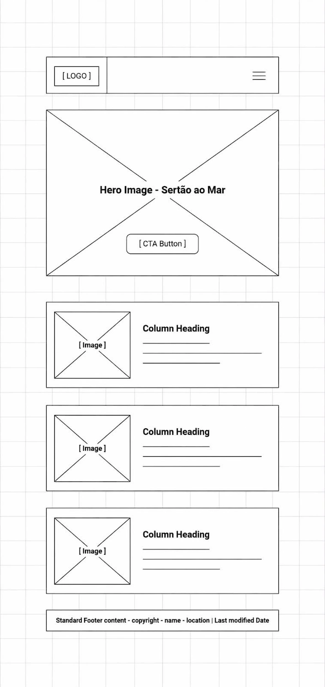
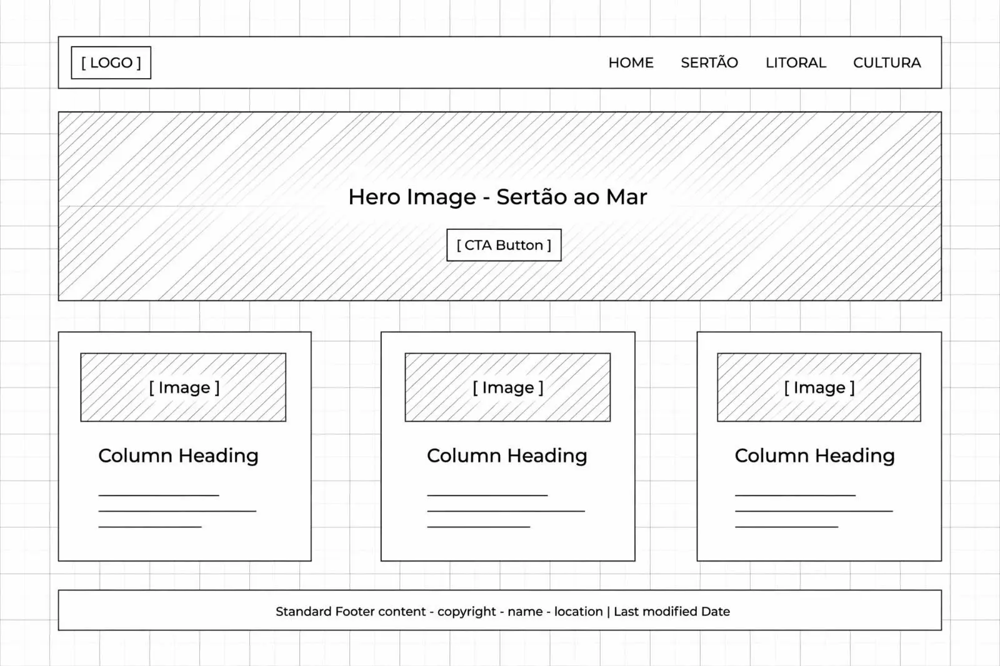

1. Nome do Site
SERTÃO AO MAR - Raízes do Nordeste
- Logotipo: S | M + cacto e onda
- Domínio: sertaomar.org
Por que escolhi? Resume os dois extremos do Nordeste, é curto, memorável e tem forte identidade cultural.
2. Finalidade do Site
O site Sertão ao Mar - Raízes do Nordeste tem como finalidade ser um portal cultural e turístico que conecta o interior ao litoral nordestino, fornecendo um acervo organizado sobre cultura, história e vivências da região.
O site fornecerá:
- Informações detalhadas sobre a vida, clima e resistência do povo sertanejo;
- Guias sobre as praias, culinária e festas do litoral;
- Galeria de fotos e curiosidades culturais;
- Formulário de contato para dúvidas e sugestões de visitantes e um formulário de inscrição para newsletter cultural.
O escopo é educacional e informativo, com 4 páginas responsivas (Início, Sertão, Litoral, Cultura), sem sistema de venda, focado em valorização cultural.
3. Cenários - Perguntas do Público-Alvo
O público-alvo são turistas de 18 a 45 anos e estudantes que buscam conhecer a cultura nordestina além do clichê de sol e praia.
- Cenário 1: "Quais comidas típicas eu não posso deixar de provar quando for ao sertão e quais são as diferenças para a comida do litoral?"
- Cenário 2: "Como é a vida no sertão durante a seca e quais são as festas tradicionais mais importantes para eu planejar minha viagem em junho?"
- Cenário 3: "Onde posso ver fotos reais e dicas de praias menos turísticas e como entro em contato para sugerir um local para o site?"
4. Esquema de Cores
Paleta inspirada no sertão e no mar: areia, barro e oceano profundo.
| Cor | HEX | Onde será usada |
|---|---|---|
| Areia do Sertão | #F4E4BC | Fundo secundário (sections, h2) e destaques suaves |
| Barro Terracota | #722915 | Títulos h2, botões, bordas e acentos / hover |
| Azul Oceano | #0A4A70 | Títulos h1, header, footer, links e texto em destaque |
| Texto Escuro | #2E2E2E | Parágrafos e texto corrido |
| Branco | #FFFFFF | Fundo principal do body |
5. Tipografia
Seleção de 2 fontes para manter identidade forte e boa leitura.
| Fonte | Nome | Onde será usada |
|---|---|---|
| Exemplo Aa | Merriweather - Bold 700 | Títulos h1, h2, h3. Transmite força e tradição, como o sertão. |
| Exemplo Aa | Open Sans - Regular 400 / 600 | Parágrafos, listas, menu e formulários. Fonte limpa e muito legível. |
Este é um exemplo de título com Merriweather
Este é um exemplo de parágrafo com Open Sans. A leitura é leve e confortável, ideal para contar as histórias do sertão ao litoral, garantindo que o usuário permaneça mais tempo no site.
6. Wireframe
Esboço da página inicial - Representação de layout sem conteúdo real, mostrando o relacionamento dos elementos.
Visão Móvel (320px)
Layout em coluna única, menu hamburguer, seções empilhadas. Navegação inferior para facilitar o acesso com o polegar.

Visão Desktop / Área Ampla (1024px+)
Layout em 3 colunas, menu horizontal expandido, hero em largura total com call-to-action centralizado. Conteúdo distribuído lado a lado.
